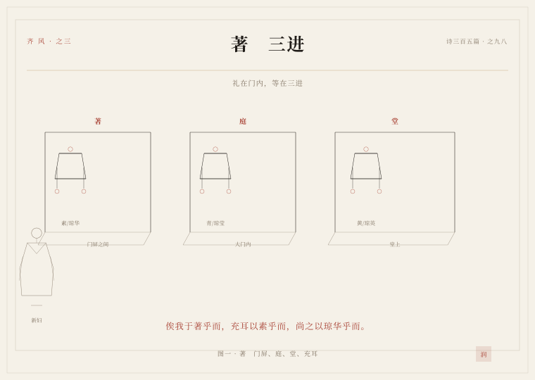
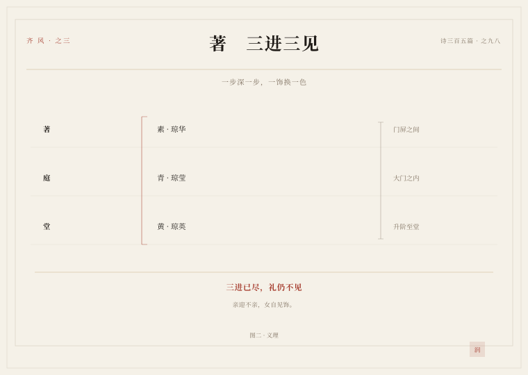

第九十八篇 著
齐风 · 之三 SJ098
朗读 · 普通话
依经文原文朗读，章次不读出；配古琴底乐，不改速、不加拖腔。全库同一音色（豆包 TTS），非播音员录制。
一 解题
诗三判：
- 谁在说：一位到夫家门外的新妇。她看见女婿在著、在庭、在堂等她，先看见的是他冠上的充耳与琼玉。
- 说什么事：三章由著到庭到堂，由素到青到黄，由琼华到琼莹到琼英；只写“俟我”“充耳”“尚之”。
- 为何编在此：097 写“野”，098
写“门”。野是并驱，门是亲迎；一野一礼，齐风由俗入礼。
《毛序》：“《著》，刺时也。时不亲迎也。”
朱子《诗集传》：“赋也。俟，待也。我，嫁者自谓也。著，门屏之间也。充耳以纩悬瑱，所谓紞也。尚，加也。琼华，美石似玉者，即所以为瑱也。东莱吕氏曰：昏礼，婿往妇家亲迎，既奠雁、御轮而先归，俟于门外，妇至则揖以入。时齐俗不亲迎，故女至婿门，始见其俟己也。”
本库的看法：《著》是一首把“迎”写成“等”的诗。
亲迎之礼，本是婿去女家迎妇；此诗却写新妇到了婿门，才看见婿在门内等她。礼倒过来，诗只写“俟”。
三章不写一句“不亲迎”，只写三进、三色、三饰；礼越详，缺越明。
先辨五事：“著”是门屏之间，读
zhù，不是“著名”；“充耳”是悬在冠两侧的瑱，不是耳环；“素/青/黄”是悬瑱的紞色，不是耳色；“琼华/莹/英”是美石似玉，不是真玉；“尚”是加饰，不是“崇尚”。
二 经文
第一章
俟我于著乎而，充耳以素乎而，尚之以琼华乎而。
第二章
俟我于庭乎而，充耳以青乎而，尚之以琼莹乎而。
第三章
俟我于堂乎而，充耳以黄乎而，尚之以琼英乎而。
分章：三章，章三句。
三 韵读
- 一章：著、素、华，鱼部；“而”为语辞，不入韵。
- 二章：庭、青、莹，耕部。
- 三章：堂、黄、英，阳部。
读法：鱼部平，耕部清，阳部亮；由门屏到庭到堂，一步比一步深，韵一步比一步亮。
四 字义与名物
- 俟：等待。著：门屏之间，古代视朝宁立之处；不是“著作”。
- 庭：大门之内、寝门之外。堂：堂上；三进由外而内。
- 充耳：冠两侧悬瑱，塞耳之饰；紞是悬瑱的绳，瑱是末端的美石。
- 素/青/黄：紞的颜色；毛传分士、卿大夫、人君，郑笺总说人臣三色。
- 琼华/琼莹/琼英：美石似玉，作瑱；华、莹、英皆言其光色。
- 乎而：语助，叠用见新妇口气；三句一“乎而”，像一步一停。
五 今译
他在门屏之间等我，冠上的充耳用素色的绳，末端加着美石琼华。
他在庭中等我，充耳用青色的绳，末端加着美石琼莹。
他在堂上等我，充耳用黄色的绳，末端加着美石琼英。
六 章旨
- 一章：写“著”与“素”。门屏之间是第一进，素是初见之色；先见其饰，后见其人。
- 二章：写“庭”与“青”。由著入庭，进一层；青是第二色。
- 三章：写“堂”与“黄”。由庭升堂，进到最内；黄是第三色。三进已尽，礼仍不见。
- 总收：礼在门内，等在三进；亲迎不亲，女自见饰。
诗写“俟”不写“迎”，就是全篇的刺。
七 诗教
- 兴：此诗用“赋”，直陈亲迎之礼；赋而刺，比兴更冷。
- 观：观“亲迎”。婚礼之始，男先于女；男不先，女就到门内去找他。
- 群：婚姻两家，门屏、庭、堂是三处公共的界；界越清，礼越明。
- 怨：诗里没有怨，只有“见”。见其饰而不见其迎，怨在言外。
八 分寸与边界
- 不可把“著”读成“著名”。它是门屏之间；一读著名，地就没了。
- 不可把“充耳”当耳环。它是冠饰悬瑱；一读耳环，男女就成了私饰。
- 不可把“琼”当真玉。它是美石似玉；一读真玉，士庶之礼就乱。
- 不可把三章当三人。毛传分士/卿/大夫/君，郑笺总说人臣；本库从“三进”，不从“三人”。
- 不可把诗当赞美婚服。三章写饰，正为写“不亲迎”；一读赞美，刺就没了。
九 存疑
- 诗旨：毛序“刺时不亲迎”；朱子同，引吕氏“齐俗不亲迎”。本库从“女至婿门”读。
- “著/宁”：毛传“门屏之间曰著”；《尔雅》作“宁”。音义同，地一也。
- “充耳”：毛以素为象瑱，郑以素为紞、琼为瑱；两读皆通，本库从郑。
- 三章分属：毛分士、卿大夫、人君；郑总为人臣。从“三进”更稳。
- 作者与年代：毛序不言何公；郑以为哀公。无确证。
十 跨典
- 《礼记·昏义》：“父亲醮子而命之迎，男先于女也。”——亲迎之礼，男先女；此诗男不先，女至门。
- 《仪礼·士昏礼》：“婿亲迎，至于女家。”——亲迎在女家，不在婿门；此诗正相反。
- 《礼记·聘义》：“瑕不掩瑜，瑜不掩瑕。”——琼华是美石，美中有瑕；此诗写饰，正见礼之瑕。
- 《诗本音》：三章鱼、耕、阳，见卷五；韵部按古韵推定。
十一 双卡与图
双卡八对：
| 著（门屏之间，zhù） |
著（著名，zhù） |
| 俟（等待） |
俟（俟候） |
| 充耳（冠饰悬瑱） |
充耳（耳环） |
| 紞（悬瑱绳） |
紞（耳色） |
| 素/青/黄（紞色） |
素/青/黄（肤色） |
| 琼华/莹/英（美石似玉） |
琼（真玉） |
| 尚（加饰） |
尚（崇尚） |
| 庭/堂（门内/堂上） |
庭/堂（庭院/厅堂泛称） |

图一 · 著 门屏、庭、堂、充耳

图二 · 著 三进三见
读图三处：
- 三重门：图一左著（门屏），中庭，右堂；三进不画人，只画门与地。
- 充耳三色：图一上排三只冠，紞作素、青、黄，末端各缀一石；石不画大，只画一点光。
- 女在门外：图一左下一位新妇，只画衣与发，不画脸；她在门外，婿在门内，“不亲迎”才成立。